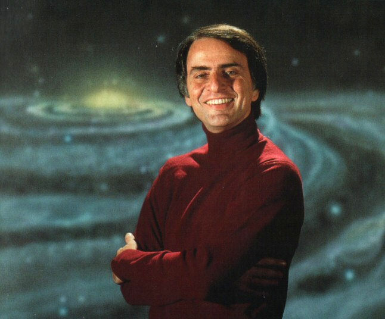

The man who reveals the secrets of the universe to people.

Carl Edward Sagan, an American astronomer, planetary scientist, cosmologist, astrophysicist, astrobiologist, author, and science communicator.
Carl Sagan's Timeline
1934 - Carl Sagan was born in Brooklyn, New York.[7] His father, Samuel Sagan, was an immigrant garment worker from Kamianets-Podilskyi, then in the Russian Empire, in today's Ukraine.
1947 - In 1947 he discovered Astounding Science Fiction magazine, which introduced him to more hard science fiction speculations than those in Burroughs's novels. That same year inaugurated the "flying saucer" mass hysteria with the young Carl suspecting that the "discs" might be alien spaceships.
1951 - Sagan had lived in Bensonhurst, where he went to David A. Boody Junior High School. He had his bar mitzvah in Bensonhurst when he turned 13. The following year, 1948, his family moved to the nearby town of Rahway, New Jersey, for his father's work, where Sagan then entered Rahway High School. He graduated in 1951. Rahway was an older industrial town, and the Sagans were among its few Jewish families.
1954 - During his time as an honors program undergraduate, Sagan worked in the laboratory of the geneticist H. J. Muller and wrote a thesis on the origins of life with physical chemist Harold Urey.
1958 - Sagan remained hopeful that the natural NEO impact threat and the intrinsically double-edged essence of the methods to prevent these threats would serve as a "new and potent motivation to maturing international relations".
1961 - From 1960 to 1962 Sagan was a Miller Fellow at the University of California, Berkeley. Meanwhile, he published an article in 1961 in the journal Science on the atmosphere of Venus, while also working with NASA's Mariner 2 team, and served as a "Planetary Sciences Consultant" to the RAND Corporation.
1966 - In 1966 Sagan was a member of the Ad Hoc Committee to Review Project Blue Book, the U.S. Air Force's UFO investigation project. The committee concluded Blue Book had been lacking as a scientific study, and recommended a university-based project to give the UFO phenomenon closer scientific scrutiny. The result was the Condon Committee (1966–68), led by physicist Edward Condon, and in their final report they formally concluded that UFOs, regardless of what any of them actually were, did not behave in a manner consistent with a threat to national security.
1977 - Because of his earlier popularity as a science writer from his best-selling books, including The Dragons of Eden, which won him a Pulitzer Prize in 1977, he was asked to write and narrate the show. It was targeted to a general audience of viewers, whom Sagan felt had lost interest in science, partly due to a stifled educational system.
1990 - An environmental appeal, "Preserving and Cherishing the Earth", signed by Sagan with other noted scientists in January 1990, stated that "The historical record makes clear that religious teaching, example, and leadership are powerfully able to influence personal conduct and commitment... Thus, there is a vital role for religion and science."
1997 - The landing site of the unmanned Mars Pathfinder spacecraft was renamed the Carl Sagan Memorial Station on July 5, 1997. Asteroid 2709 Sagan is named in his honor, as is the Carl Sagan Institute for the search of habitable planets.